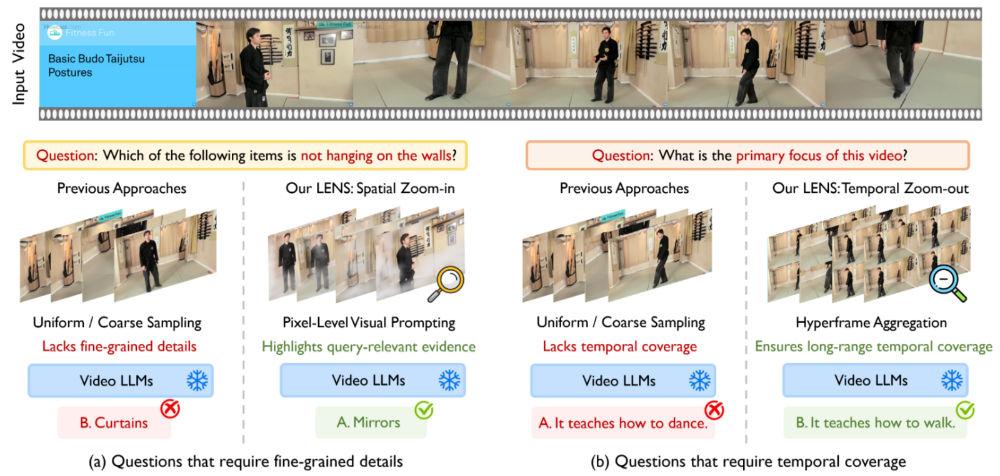
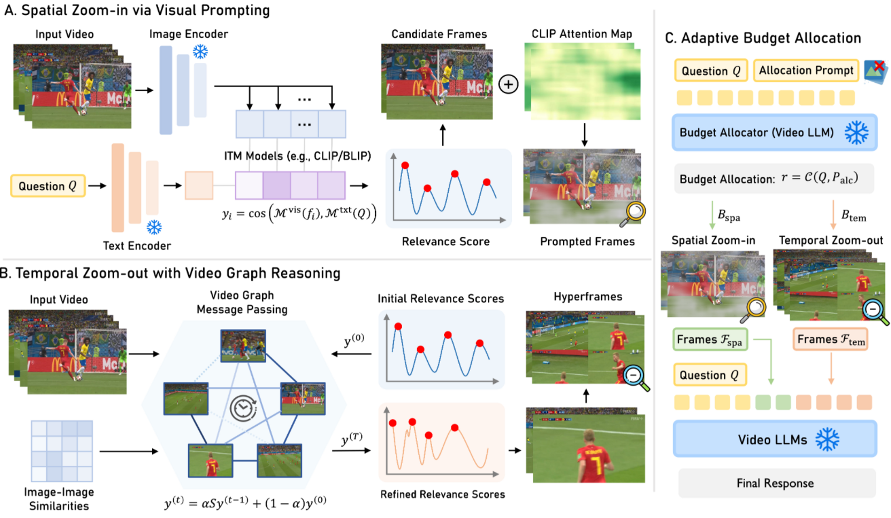
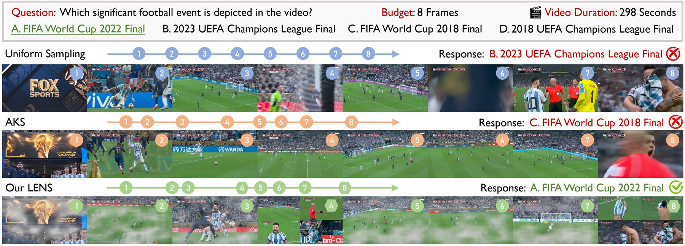
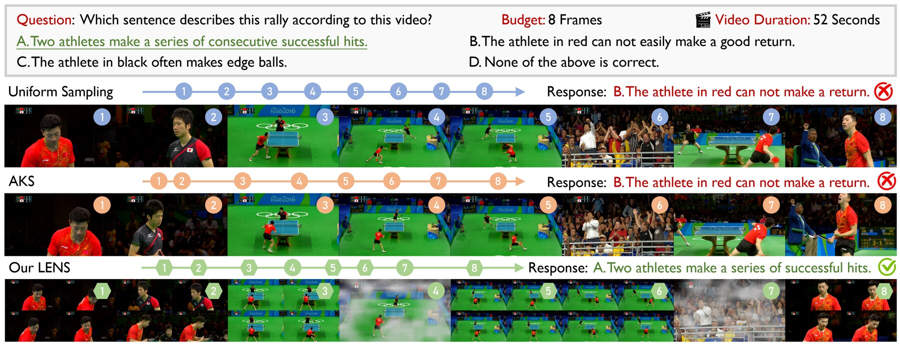

Why spatio-temporal zooming?
Understanding long-form videos with Multi-modal Large Language Models (MLLMs) is bottlenecked by limited context windows. Keyframe sampling distills a video into a compact set of query-relevant frames — but navigating the vast spatio-temporal search space is hard, because spatial detail and temporal coverage often conflict. Detail-oriented questions hinge on fine-grained evidence inside a few frames, while event-level questions require broad temporal context; a fixed sampling strategy cannot serve both.

Spatial Zoom-In
Narrows the spatial field of view within a frame to amplify local detail: ITM relevance scoring with watershed-based candidate selection, then pixel-level visual prompting from CLIP attention maps highlights query-relevant regions while suppressing background noise.
Temporal Zoom-Out
Widens the temporal field of view across frames: a video graph propagates relevance via message passing to capture global structure, and each selected anchor is aggregated with its neighbors into a hyperframe — trading spatial resolution for long-range temporal coverage.
The LENS framework
LENS adaptively allocates a limited frame budget between spatial zoom-ins and temporal zoom-outs, enabling the model to reason across multiple granularities while capturing both high-fidelity details and long-range context — without any training.

Spatial Zoom-In via Visual Prompting
CLIP/BLIP scores every frame against the query; a watershed algorithm partitions the relevance curve into temporal segments and keeps each segment's peak. Query-conditioned attention attribution, fused with visual saliency, forms an alpha mask that amplifies query-relevant regions at full resolution.
Temporal Zoom-Out with Video Graph Reasoning
Frames become nodes of a sparse graph connected by visual similarity until fully connected. Iterative message passing y⁽ᵗ⁾ = αSy⁽ᵗ⁻¹⁾ + (1−α)y⁽⁰⁾ refines relevance with the video's intrinsic structure; refined anchors are packed with neighbors into 2×2 hyperframes.
Adaptive Budget Allocation
A lightweight query-aware controller — the MLLM itself with a short allocation prompt — predicts a ratio r = C(Q, P) that splits the budget: more zoom-in for detail questions, more zoom-out for event-level questions. Frames from both branches merge in temporal order.
Results on long-form video benchmarks
Across Video-MME, LongVideoBench (LVB), and MLVU, LENS consistently outperforms state-of-the-art training-free keyframe sampling methods (BOLT, AKS, Q-Frame) at every frame budget, and transfers to open-source and proprietary backbones alike.
| Method (Qwen2.5-VL 7B) | Short | Medium | Long | V-MME Overall | LVB | MLVU |
|---|---|---|---|---|---|---|
| Uniform | 60.9 | 51.4 | 47.4 | 53.3 | 53.3 | 52.8 |
| + BOLT | 66.0 | 54.6 | 50.4 | 57.0 | 55.6 | 59.0 |
| + AKS | 62.1 | 51.4 | 48.8 | 54.1 | 52.0 | 53.7 |
| + Q-Frame | 66.7 | 58.7 | 51.3 | 58.7 | 56.6 | 58.2 |
| + LENS (Ours) | 68.7 | 59.6 | 53.7 | 60.7 +7.4 | 59.3 | 63.7 |
| Method (Qwen2.5-VL 7B) | Short | Medium | Long | V-MME Overall | LVB | MLVU |
|---|---|---|---|---|---|---|
| Uniform | 67.3 | 55.0 | 48.9 | 57.1 | 56.7 | 57.1 |
| + BOLT | 71.7 | 57.7 | 49.7 | 59.7 | 58.0 | 64.5 |
| + AKS | 66.4 | 56.9 | 48.6 | 57.3 | 55.7 | 57.8 |
| + Q-Frame | 70.0 | 59.4 | 52.6 | 60.7 | 57.1 | 61.9 |
| + LENS (Ours) | 72.3 | 62.1 | 54.8 | 63.1 +6.0 | 59.7 | 65.9 |
| Method (Qwen2.5-VL 7B) | Short | Medium | Long | V-MME Overall | LVB | MLVU |
|---|---|---|---|---|---|---|
| Uniform | 72.6 | 59.0 | 51.8 | 61.1 | 58.4 | 59.4 |
| + BOLT | 74.3 | 64.2 | 53.8 | 64.1 | 58.6 | 66.3 |
| + AKS | 66.4 | 56.9 | 48.6 | 57.3 | 58.3 | 63.1 |
| + Q-Frame | 71.8 | 62.4 | 52.8 | 62.3 | 58.7 | 64.6 |
| + LENS (Ours) | 74.6 | 70.0 | 56.7 | 67.1 +6.0 | 60.6 | 66.7 |
| Backbone (8 frames) | Short | Medium | Long | V-MME Overall | LVB | MLVU |
|---|---|---|---|---|---|---|
| LLaVA-OneVision 7B | 63.9 | 51.2 | 43.9 | 53.2 | 51.8 | 59.2 |
| + LENS (Ours) | 66.2 | 60.1 | 49.7 | 58.7 +5.5 | 57.5 | 66.3 |
| GPT-5-Mini | 74.4 | 61.1 | 58.9 | 64.8 | 55.0 | 49.1 |
| + LENS (Ours) | 78.6 | 62.7 | 65.6 | 69.0 +4.2 | 61.7 | 53.8 |
VQA accuracy (%) on Video-MME (w/o subtitles), LongVideoBench, and MLVU. Baselines re-implemented under identical protocols.
🧪 Component ablation — Video-MME overall (8 frames)
⚡ Efficiency — full Video-MME, 8×RTX 6000 Ada
LLM-agent / video-RAG pipelines (VideoRAG, Vgent) take 50+ hours on the same benchmark — over 4× the runtime of LENS.
What does LENS actually look at?
LENS selects frames that are not only semantically relevant but also complementary across spatial and temporal scales: spatial zoom-in emphasizes discriminative cues (e.g., the event-title region), while temporal zoom-out preserves the overall context of the video.


BibTeX
@inproceedings{zhang2026lens,
title = {LENS: Adaptive Spatio-Temporal Zooming for Keyframe Sampling in Long-Form Videos},
author = {Zhang, Ce and He, Jinxi and Sycara, Katia and Xie, Yaqi},
booktitle = {European Conference on Computer Vision (ECCV)},
year = {2026}
}